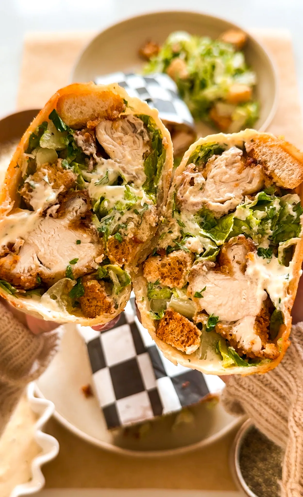

CRISPY CHICKEN CAESAR WRAP
DINNER MAIN COURSE
Prep Time: 30 min
Cook Time: 30 min
Total Time: 1 hour
Yields: 2 wraps
Why have just a Caesar salad when you can enjoy all those
flavors wrapped up in a warm, cozy tortilla? This crispy
chicken Caesar salad wrap is everything you love about the
classic, but even better—think crunchy chicken tenders, creamy
dressing, and a crispy parmesan-crusted tortilla. It's like
taking your favorite salad and making it so much more
satisfying!

Ingredients
- 1 pound chicken tenderloins (about 8 to 9 strips)
- vegetable oil, for frying
CRISPY CHICKEN - DRY
- 1 cup all-purpose flour
- 3 tablespoons cornstarch
- 1 teaspoon garlic powder
- 1 teaspoon onion powder
- 2 teaspoons chili powder
- 2 teaspoons salt
- 1 teaspoon dry mustard powder
- 1 teaspoon black pepper
- 1 teaspoon baking powder
CRISPY CHICKEN - WET
- 3/4 cup buttermilk
- 1 large egg
- 1/4 cup pickle juice
- 1 teaspoon baking powder
- sprinkle of salt
- sprinkle of black pepper
CAESAR DRESSING
- 1 cup mayonnaise
- 1/4 cup buttermilk
- 1 tablespoon lemon juice
- 1/2 tablespoon Worcestershire sauce
- 2 teaspoons miced garlic
- 2 teaspoon yellow mustard
- 1 teaspoon anchovy paste
- 1 teaspoon dried parsley
- 1/2 teaspoon black pepper
- 1/2 cup parmesan, freshly grated
OTHER
- 3 to 4 large flour tortillas
- 4 to 5 cups chopped romaine lettuce
- 1 tablespoon chopped parsley
- sprinkle of black pepper
- 1/2 cup croutons
- 1/2 cup garted parmesan, for the crust
- oil spray
INSTRUCTIONS
DRESSING
-
In a medium bowl, whisk together the mayonnaise, buttermilk,
lemon juice, Worcestershire sauce, minced garlic, yellow
mustard, anchovy paste, dried parsley, black pepper, and
freshly grated parmesan cheese until smooth and
well-combined.
DRY
-
In a large bowl, whisk together flour, cornstarch, garlic
powder, chili powder, salt, mustard powder, black pepper,
and baking powder. Set aside.
WET
-
In a deep bowl, whisk together buttermilk, egg, pickle
juice, salt, black pepper, and baking powder.
-
Add 3 to 4 tablespoons of the wet batter into the dry and
mix around to create a flaky texture. Set aside.
BREADING AND FRYING
-
Dip each tender first in the dry, then into the wet, then
back into the dry - using one hand for the wet only and one
hand for dry only. Make sure to let any excess fall off
before dipping into the next.
-
Once all the tenders are breaded, allow to rest for 10 to 15
minutes before frying.
-
Heat oil to about 350°F in a frying pan, about 1.5 to 2
inches high.
-
Drop the tenders in, making sure not to overcrowd them.
Fry in 2 to 3 batches. Fry until golden brown all around,
about 7-8 minutes, making sure to flip over halfway.
- Transfer to a paper towel to drain any excess oil.
ASSEMBLY AND TOASTING
-
In a large mixing bowl, add a generous drizzle of the
dressing to your taste, lettuce, parsley, black pepper,
Italian seasoning, and croutons. Toss together well.
-
To the center of the tortilla, add a spoonful of the Caesar
dressing and spread it around.
-
Add about 1 cup of the Caesar salad mix. Place the tenders
on top, about 3. Add another cup of the Caesar salad on top.
-
Wrap the tortilla around very tightly by folding the left
and right sides in and then rolling over from one end to
the other to seal it up.
-
Heat a large frying pan over medium heat. Spray with oil and
add a generous sprinkle of parmesan cheese.
-
Place the wrap on top of the cheese so it sticks on and let
it crisp up. Once golden and crispy around the edges,
repeat on the other side.
-
Slice the wrap in half and enjoy while fresh and crispy!
LEMON LOAF CAKE
DESSERT
Prep Time: 1 hour
Cook Time: 1 hour
Total Time: 2 hours
Yields: 10 slices
If you love the lemon loaf cake from Starbucks, be prepared to
be blown away by this copycat recipe! It’s packed with bright
citrusy lemon flavor and the cake is incredibly moist and soft
just like the real thing but even better. Drizzled with the
most delicious glaze on top, this cake is surprisingly so easy
to make and perfect for the summer coming up!
INGREDIENTS
LEMON CAKE
- 1 3/4 cup all=purpose flour
- 1 teaspoon baking powder
- 1/2 teaspoon baking soda
- 1/2 teaspoon salt
- 3.2 ounces package lemon instant pudding
- 1 1/4 cup white granulated sugar
- 3 large eggs
- 1/2 cup vegetable oil
- 1 cup sour cream
- 1 teaspoon vanilla extract
- 1/4 cup lemon juice
- 2 tablespoons lemon zest
LEMON ICING
- 2 cups confectioners sugar
- 3 tablespoons lemon juice
- 1 tablespoon whole milk
- 1 teaspoon vanilla extract
INSTRUCTIONS
- Preheat oven to 350°F.
-
To a large mixing bowl, add the all-purpose flour, baking
powder, baking soda, salt, and lemon instant pudding. Whisk
together well.
-
To another bowl, add the sugar, eggs, vegetable oil, sour
cream, vanilla extract, lemon juice, and lemon zest. Beat
together until smooth.
-
Now add all the dry ingredients to the wet. Combine
together until you have a batter.
-
Line a loaf pan with parchment paper and transfer
the batter.
-
Bake for 55 minutes to 1 hour until a toothpick comes out
clean in the center.
-
Remove from the oven and allow to cool for about an hour
before glazing.
-
To a bowl, combine confectioners sugar with lemon juice and
milk to create a glaze.
-
Once the cake is cooled, add the glaze on top, adding as
little or as much as you'd like.
- Let the frosting set for 5 minutes and then slice.
CROSSANT EGG BOATS
BREAKFAST
Prep Time: 15 min
Cook Time: 20 min
Total Time: 35 min
Yields: 8
If you're looking for a unique and delicious twist on a classic
breakfast, these croissant egg boats are perfect for you. With
one version filled with a savory mix of tomatoes, basil, and
feta, and the other featuring a hearty combination of bacon and
cheddar, there's something for everyone. These croissant egg
boats are easy to prepare and sure to impress at your next
brunch!

INGREDIENTS
METHOD #1
- 4 large eggs
- 4 strips beef bacon
- 1/2 cup shredded cheddar cheese
- salt, to taste
- black pepper, to taste
METHOD #2
- 6 large eggs
- 1/3 cup grape tomatoes, diced
- 2 tablespoons basil, chopped
- 1/4 cup feta cheese, crumbled
- 1/2 teaspoon italian seasoning
- salt, to taste
- balck pepper to taste
INSTRUCTIONS